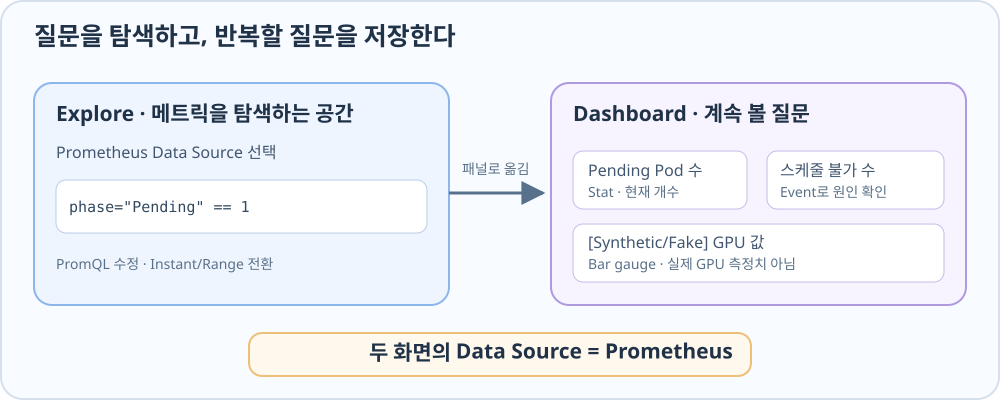

Prometheus 결과를 조회하는 Grafana
Prometheus에 시계열이 쌓이면 Grafana는 이를 조회하고 시각화하는 창이 된다. Grafana가 Kubernetes 객체를 직접 Watch하는 구조는 아니다. 먼저 Prometheus를 Data Source로 연결하고, Explore에서 쿼리를 시험한 뒤, 계속 볼 값만 Dashboard에 남긴다.

Grafana 설치
아래 명령은 Grafana Chart 저장소를 준비하고 observability Namespace에 Grafana를 설치한다. grafana-values.yaml에는 이 예제의 설치 설정이 들어 있다. 이미 설치돼 있다면 반복할 필요가 없다.
helm repo add grafana-community https://grafana-community.github.io/helm-charts
helm repo update
helm upgrade --install grafana grafana-community/grafana \
--version 13.2.5 --namespace observability --create-namespace \
-f grafana-values.yaml
Grafana 화면 접속
kubectl port-forward는 클라이언트의 localhost:3000을 Grafana Service에 임시로 연결한다.
kubectl -n observability port-forward svc/grafana 3000:80
포트포워딩이 살아 있는 동안 브라우저에서 http://localhost:3000으로 들어갈 수 있다.
Prometheus Data Source 연결
Grafana의 Data Source로 Prometheus를 선택하고 서버 URL에 http://prometheus-server.observability.svc.cluster.local:80을 입력한다. 이 주소는 Grafana가 실행되는 클러스터 안에서 Prometheus Service를 찾는 주소다. 저장 후 연결 테스트가 성공하면 Grafana Explore에서 PromQL을 보낼 준비가 된 것이다.
Explore에서 메트릭을 탐색하기
Explore에서 Prometheus Data Source를 고르고 쿼리 편집기를 Code로 바꾸면 PromQL을 직접 입력할 수 있다. 먼저 up으로 수집 대상을 살펴보고, 이어서 Pod Phase와 Replica, GPU 자원 메트릭을 조회한다. 새로고침 버튼이나 Shift+Enter로 쿼리를 실행한다.
예를 들어 이 쿼리는 Pending이라는 Phase의 값이 1인 Pod만 남긴다.
kube_pod_status_phase{namespace="gpu-resource-lab",phase="Pending"} == 1
이 쿼리는 같은 Namespace에서 Pending인 Pod의 수를 합한다.
sum(kube_pod_status_phase{namespace="gpu-resource-lab",phase="Pending"})
Explore에서 Instant는 선택한 시점의 값을, 시간 범위 조회는 지정한 기간의 값 변화를 본다. 지금 Pending인 Pod를 찾을 때는 현재 값을, Pending 상태가 언제 생겼는지 볼 때는 시간 범위를 조회한다. 결과가 비어 있는 것과 값이 0인 것은 다르다. 결과가 없으면 메트릭 이름이나 Label, 조회 시각, 수집 연결을 확인해야 한다.
자주 묻는 질문은 Dashboard에 어떻게 담을까?
Explore는 그때그때 질문을 바꿔 보는 공간이다. 계속 보고 싶은 질문이 정해지면 Dashboard의 패널로 옮길 수 있다. Dashboards → New → Add visualization에서 Prometheus Data Source를 고르고, 패널 편집기의 Code 모드에 PromQL을 넣는다. 값을 어떻게 읽을지에 따라 시각화 유형을 선택하고 패널을 적용한 다음 Dashboard를 저장한다. 예제 Dashboard에는 서로 다른 세 질문을 담았다.
| 패널 | PromQL | 읽는 법 |
|---|---|---|
| 스케줄 불가 Pod 수 | sum(kube_pod_status_unschedulable{namespace="gpu-resource-lab"}) |
해당 Namespace에서 Scheduler가 배치 불가로 표시한 Pod의 현재 개수 |
| Pending Pod 수 | sum(kube_pod_status_phase{namespace="gpu-resource-lab",phase="Pending"}) |
해당 Namespace에서 현재 Phase가 Pending인 Pod의 개수 |
[Synthetic/Fake] GPU 사용률 (%) — 실제 GPU 아님 |
DCGM_FI_DEV_GPU_UTIL |
Fake GPU Exporter가 내보낸 장치별 합성 사용률 값 |
Pending 수처럼 지금의 개수가 중요하면 Stat 패널이 읽기 쉽다. 장치별 합성 GPU 값은 Bar gauge에서 Instant로 볼 수 있다.
패널의 시간 범위
Time series 시각화를 선택했다고 해서 자동으로 과거 추세가 생기는 것은 아니다. 예제의 스케줄 불가 수 패널은 쿼리가 Instant이므로 현재 값에 가깝다. 변화를 선으로 보고 싶다면 쿼리를 시간 범위 조회로 바꿔야 한다. DCGM_FI_DEV_GPU_UTIL을 그대로 조회해 Instant로 표시하면 현재 합성 값이며, 과거의 최댓값을 계산하는 max_over_time 쿼리는 아니다.
GPU 자원량 해석
kube_node_status_allocatable{resource="nvidia_com_gpu"}가 2인 Node에 Pod를 배치해도 이 값은 자동으로 1이 되지 않는다. Allocatable은 게시된 총량이며, 배치 여유를 생각할 때는 같은 Node에 배정된 Pod의 요청량도 필요하다. 이 두 값의 의미는 GPU Pod 상태 메트릭에서 연결해 읽는다.
Pod 상태 메트릭의 범위
Pod의 Phase가 Running, Ready 조건이 참이고 Restart Count가 0이어도 알 수 있는 것은 배치·준비·재시작 상태다. LLM 요청이 빠르게 처리되는지, GPU에서 실제 연산이 얼마나 수행되는지는 이 메트릭으로 알 수 없다.
Fake GPU 패널의 범위
예제 Dashboard는 패널 제목에 [Synthetic/Fake]를 붙여 DCGM_FI_DEV_GPU_UTIL 값의 출처를 드러낸다. 이 값은 실제 GPU 연산 측정치가 아니라 Fake GPU Exporter의 합성 값이다. 값이 100이어도 BusyBox 컨테이너가 CUDA를 실행했다는 뜻은 아니다. 현재 시계열 자체에는 synthetic=true 같은 식별 Label이 없다. 시간 범위로 바꾸면 같은 Fake GPU라도 할당 전·후의 Pod Label이 달라 여러 시계열로 갈라져 보일 수 있다.
Kubernetes 객체 상태 메트릭은 무엇이 배치·준비됐는가, Scheduler Event는 왜 배치되지 않았는가, GPU Runtime·하드웨어 메트릭은 실제 연산 자원이 어떻게 쓰이는가라는 서로 다른 질문에 답한다.
예제의 Manifest·Helm Values와 Dashboard JSON은 관측 환경과 설정 원문에 코드블록으로 보존했다.